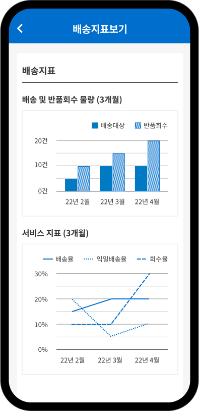

CJ대한통운
차세대 택배시스템
배송과정에 일련의 과정 및 상태를 직관적으로 디자인하고 서비스의 질을 높일 수 있도록 시스템을 구성하였습니다.


Design Concept
CJ 대한통운의 일원화된 브랜드 경험을 만드는 것을 목표로 고객 중심의 사용성을 우선으로 하는 UI/UX를 구현했습니다. 그룹 가이드라인을 준수한 일관된 브랜드 아이덴티티를 제공하고 정서적 몰입과 공감을 이끌어 내는 디자인으로 개선했습니다.
